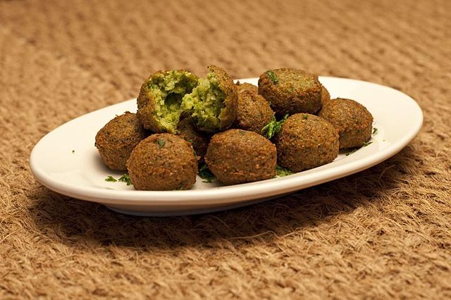

FELAFEL (ฟีราเฟล)
- แช่ถั่วลูกไก่ในน้ำสะอาดทิ้งไว้ 4-5 ชั่วโมง ก่อนนำมาต้มจนนิ่ม ใช้เวลาประมาณ 30-45 นาที จากนั้นนำขึ้นสะเด็ดน้ำและพักไว้จนเย็น
- ปั่นถั่วลูกไก่จนละเอียด จากนั้นปรุงรสด้วยเกลือป่นเล็กน้อย (ชิมรสตามชอบ) ยี่หร่าผง พริกคาเยน ผักชีฝรั่งสับ หองแดงสับ กระเทียมสับ ก่อนเติมไข่ไก่และแป้งสาลีอเนกประสงค์ จากนั้นคลุกเคล้าส่วนผสมให้เข้ากัน สังเกตว่าส่วนผสมสามารถปั้นเป็นก้อนได้แบบไม่เละ หากส่วนผสมยังเหลวสามารถเติมแป้งสาลีอเนกประสงค์เพิ่มได้
- ปั้นส่วนผสมเป็นก้อนกลม จากนั้นทาน้ำมันพืชเล็กน้อย แล้วนำเข้าหม้อทอดหรือเตาอบรมร้อนที่ 180 องศา ประมาณ 8-10 นาที
- เสิร์ฟเคียงกับผักสดและเครื่องจิ้มซึ่งปรุงด้วยโยเกิร์ตรสธรรมชาติ 1 ถ้วย ผสมมายองเนส 3 ช้อนโต๊ะ แต่งรสด้วยเกลือเล็กน้อย และโรยผักชีลาวสับ
KOSHARY (กอสชารี่)
- เตรียมถั่วฝักยาว: ใส่ถั่วฝักยาวลงในกระชอนแล้วล้างให้สะอาด วางไว้ในกระทะขนาดใหญ่พร้อมน้ำ 3 ถ้วยและเกลือ 1 ช้อนชา
- ตั้งไฟจนน้ำเริ่มเดือด ลดความร้อนลงและเคี่ยวประมาณ 1 ชั่วโมงจนถั่วฝักยาวนุ่ม สะเด็ดน้ำและพักไว้
- เตรียมมะกะโรนี: เติมน้ำลงในกระทะเดียวกัน (ใส่เกลือได้ตามต้องการ) ตั้งไฟจนน้ำเริ่มเดือด
- เตรียมมะกะโรนี: เติมน้ำลงในกระทะเดียวกัน (ใส่เกลือได้ตามต้องการ) ตั้งไฟจนน้ำเริ่มเดือด
- เตรียมข้าว: ใส่น้ำมันมะกอก 2 ช้อนโต๊ะลงในกระทะใบเดียวกัน ใส่ข้าวลงไปแล้วหุงประมาณ 2 ถึง 3 นาทีโดยปิดด้านล่างของข้าวด้วยน้ำมัน
- เติมน้ำ 2 ถ้วยแล้วตั้งไฟจนน้ำเดือด ปิดกระทะและเคี่ยวจนข้าวนุ่มประมาณ 15 นาที
- นำออกจากเตาและปล่อยให้เย็นประมาณ 5 นาที
- ประกอบ koushari: ระบายถั่วชิกพีแล้วล้างออก ใส่ถั่วชิกพีถั่วเลนทิลมักกะโรนีและข้าวสุกแล้วใช้ส้อมจิ้มเบา ๆ
- ทำซอส: ปอกหัวหอมแล้วหั่นครึ่งตามยาว หั่นครึ่งตามขวางเป็นชิ้นบาง ๆ
- ใส่น้ำมันมะกอก 1/4 ถ้วยลงในกระทะ ใส่หัวหอมและปรุงอาหารโดยใช้ช้อนไม้คนบ่อยๆจนหัวหอมเป็นสีน้ำตาลทอง
- ใส่กระเทียมและปรุงเพิ่มอีก 1 หรือ 2 นาที ใส่มะเขือเทศบดแล้วตั้งไฟจนเป็นฟอง
- ตอนนี้เทซอสลงบนส่วนผสมของถั่วและนำไปตั้งไฟด้วยไฟอ่อนมากประมาณ 5 นาทีจนร้อนสนิท
- เสิร์ฟพร้อมขนมปังพิต้า
SHAWARMA (ชาวารม่า)
- ผสมโยเกิร์ตกับ ผงหมักรสชาวาร์มา (ตรา คัสตอม คูลินารี เชฟ โอน) กระเทียมสับ ขิงสับ น้ำมันมะกอก และ น้ำมะนาว ให้เข้ากัน
- เติมเนื้อสไลด์เข้าไปในส่วนผสมขั้นที่ 1 และผสมให้เข้ากัน พักไว้ 1 – 2 ชั่วโมงในตู้เย็น
- ย่างเนื้อสไลด์หรืออบให้สุก
- เสิร์ฟเนื้อชาวาร์มากับแผ่นแป้งนาน หรือแป้งพิต้า พร้อมกับผักกาดแก้ว หอมแดง และมะเขือเทศที่เตรียมไว้ ราดด้วยโยเกิร์ตรสธรรมชาติ